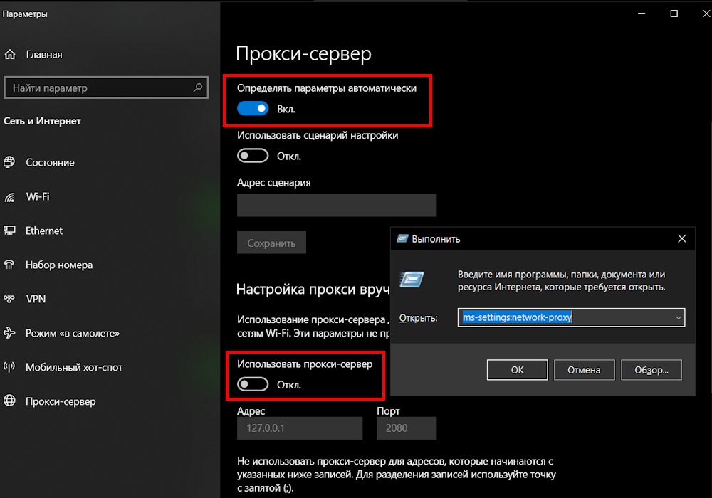

Используйте Вашу подписку в одном из приложений
А так же, для лучшей работы нужно правильно настроить маршрутизацию и конфигурацию
Лучшие VPN приложения
Подробные инструкции
Помощь и советы
Какие приложения лучше всего подходят для подключения?
+Android
+- v2rayNG — лучший клиент на момент начала 2026г с постоянной поддержкой
- NekoBox — отличный стабильный клиент: удобный интерфейс и очень гибкая настройка
- Hiddify — альтернатива для тех, кому нужен ленивый подход
- V2Box — основа как v2rayNG, но простой с урезанными функциями
Windows
+- v2rayN — лучший клиент на момент начала 2026г с постоянной поддержкой
- Nekoray / NekoBox Desktop — отличный стабильный клиент: удобный интерфейс и очень гибкая настройка
- Hiddify (Windows) — удобная универсальная сборка, часто обновляется, нет настроек, для ленивых
- Furious / InvisibleMan — альтернативы с разным UX (Furious — современный интерфейс)
iOS / iPadOS
+- V2Box — удобный клиент с поддержкой, подходит большинству пользователей
- Shadowrocket — платный, но мощный клиент с гибкими настройками протоколов
- FoXray / Streisand (разные проекты) — качественные клиенты на базе Xray
- Hiddify — доступен и часто обновляется, нет настроек. Вариант для ленивых
macOS
+- v2rayN — c 2024г работает и на macOS, но имеет интерфейс Windows UI
- ClashX — гибкий и мощный, можно использовать YAML-конфигурации
- Stash — современное решение, доступно и для macOS
Linux
+- xray-core — запуск через терминал или systemd. Полный контроль и гибкость
- NekoBox (Linux GUI) — для тех, кто хочет графический интерфейс
- Clash CLI — требует YAML-конфигураций, подходит продвинутым
Почему нужно отключать проксирование русского трафика?
+Многие российские сервисы (банки, кинопоиск, яндекс.музыка) работают только с российских IP-адресов.
При проксировании всего трафика через VPN некоторые сервисы не просто перестанут работать, а будут грузить лишний трафик.
Это и лишняя нагрузка на сервер, и вероятность блокировки использования VPN со стороны РКН.
Поэтому необходимо настроить маршрутизацию так, чтобы российский трафик шел напрямую.
Зачем настраивать маршрутизацию?
+Маршрутизация позволяет настроить тонкий фильтр трафика, который делает VPN умнее, быстрее и надёжнее.
Пример:
- Слушаешь музыку в Яндекс.Музыке — трафик идёт напрямую
- Открываешь YouTube — трафик идёт через VPN
- Браузер → VPN. Торренты → напрямую. Аналитика → блокируется
Что делать, если VPN не работает?
+Если VPN не работает, попробовать следующее:
- Запустить программу от имени администратора
- Проверить полностью ли скопирована подписка
- Проверить настройки маршрутизации
- Отключить другие VPN приложения
- Перезагрузить устройство
- Возможно неправильная настройка - перенастроить по инструкции
Сервер может временно не работать когда ведётся работа по улучшению и устранению проблем.
Нужно периодически обновлять подписку чтобы новые настройки сервера обновились.
При необходимости временно использовать бесплатные Drop сервера.
Скопируйте весь код из файла ниже и вставьте в приложение, создав новую группу.
Список периодически обновляется - неработающие серевера удаляются, работающие добавляются
Можно ли использовать VPN на нескольких устройствах?
+Да, можно использовать на нескольких устройствах.
Но не получится использовать подписку с одним и тем же сервером на нескольких устройствах одновременно.
Если в Windows интернет не работает когда VPN отключён
+Иногда включённый системный прокси мешает доступу в интернет.
Для исправления нужно отключить прокси для локальных подключений.
- Нажать Win + R и ввести:
ms-settings:network-proxy
- Нажать Enter
Откроется окно Параметры → Сеть и Интернет → Прокси
- Включить галочку Автоматическое применение параметров
- Убрать галочку Использовать прокси-сервер
- Нажать Сохранить

Почему используется протокол Vless и что такое XRay?
+XRay — это современный VPN, который помогает скрыть сам факт использования VPN.
Он делает так, что провайдеру кажется, будто вы просто открыли обычный сайт.
Vless — это протокол подключения, который поддерживает такую маскировку и высокую скорость.
Насколько безопасно использовать VPN?
+
Ваш трафик шифруется, никто (включая провайдера) не увидит, что вы делаете в интернете.
Но будьте внимательны при использовании VPN (даже платных) от непроверенных источников.
Вы используете VPN для безопасности и конфиденциальности, а не с умыслом обойти блокировки